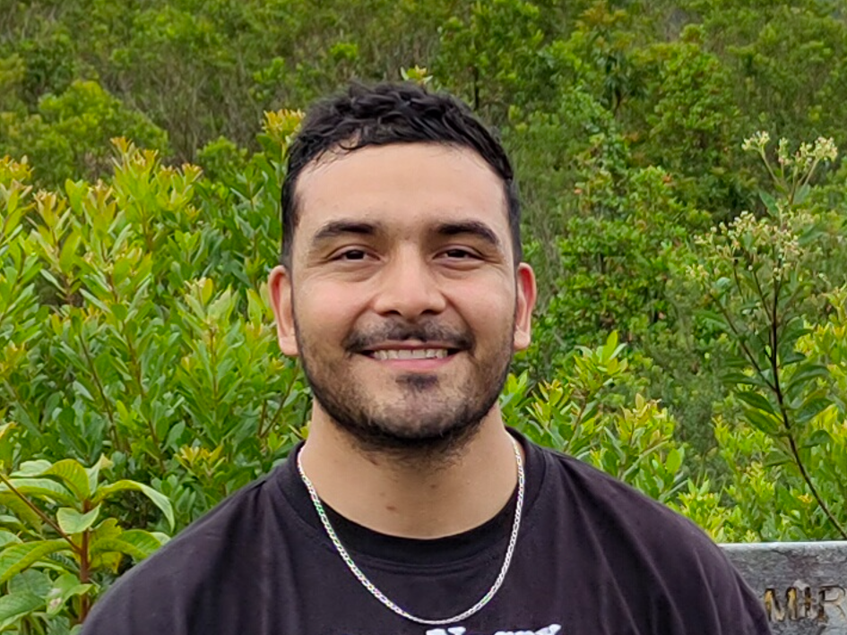

Raúl Marín López
Technical Project Manager | IoT Product Engineer | Python Developer
Professional Summary
Technical Project Manager & IoT Product Engineer with over 10 years of hybrid experience spanning telecommunications, hardware validation, and full product lifecycle management. Proven track record of scaling low-power IoT solutions from R&D to mass deployment, including the successful launch of 7,000+ field units across Latin America. Expert in bridging the gap between hardware, firmware, and web development teams. Strong background in 3GPP protocols, process automation via Python, and quality assurance. Combines strategic technical leadership with hands-on engineering skills to deliver robust, cost-effective, and highly reliable technological products.
Professional Experience
Project Manager & QA Lead | S4IoT (Mar 2020 – Present)
• Project Leadership & Product Launch: Promoted to Project Manager to lead cross-functional teams (HW, FW, and Web Platform). Directed the technical design and launch of the Athen-based IoT gas sensor, successfully deploying over 7,000 field units with a 5-year battery life and earning high customer ratings across major e-commerce platforms. • Process Automation & Cost Reduction: Developed Python-based scripts and a custom GUI to automate device flashing, field failure reporting, and data metrics analysis. This initiative significantly reduced SMT factory production costs and minimized the need for manual technician labor. • Firmware QA & IoT Innovation: Spearheaded firmware stability testing for the NXP KL17 MCU and Quectel BG96 modem. Optimized LTE connectivity via AT commands and 3GPP protocols, expanding the Athen platform into Smart Agriculture, Medical, and Asset Tracking.
Field Application Engineer | UNISOC (Feb 2016 – Mar 2020)
• Carrier Certification & Homologation: Led the homologation process for mobile devices across Latin America for major network operators including Telcel, Claro, Movistar, and Entel, acting as the primary technical liaison between regional clients and global R&D teams in China, Korea, the US, and Europe. • Network Protocol Analysis: Executed deep modem log analysis using the LOGEL tool to troubleshoot Layer 3 network messages (NAS and RRC), leveraging 3GPP NAS protocol expertise to identify root causes of certification failures.
Field Test Intern | MOTS (Aug 2015 – Feb 2016)
• International Field Testing: Conducted field testing for Nokia devices across Mexico, Colombia, and Chile. Utilized CMW500 and CMU200 testing equipment for RF protocol validation based on 3GPP standards. • Test Engineering & Reporting: Engineered a novel power consumption testing protocol to provide clients with accurate battery life profiles across various use cases. Created test plans and delivered daily technical reports directly to Nokia engineers.
Early Career & Entrepreneurship (2010 – 2015)
• E-commerce Co-Founder (2010 - 2014): Managed a successful online electronics repair business. Performed advanced GPU reballing on over 2,000 Xbox 360 consoles and hundreds of laptops, maintaining a near-zero failure rate and ensuring customer satisfaction with a 6-month warranty. • Radio UDG Cabin Operator Intern (2014 - 2015): Operated live broadcast cabin equipment, demonstrating high adaptability and precise timing to follow segment rundowns, while independently managing music programming during special live broadcasts.
Core Competencies & Technical Skills
• Project Management & Leadership: Technical Project Management, Cross-Functional Team Leadership (HW/FW/Web), PLM, MS Project. • Telecommunications & Networking: 3GPP Standards (Rel 13 & 14), LTE, NAS & RRC, TCP/IP, AT Commands, Cellular Triangulation. • Log Analysis & Troubleshooting: QXDM, LOGEL, Wireshark, Root Cause Analysis. • Programming & Scripting: Python (Pandas, NumPy, Matplotlib, Tkinter, Django), Embedded C, HTML/CSS. • Hardware & Manufacturing: Low-Power IoT Architecture, Firmware QA (I2C, UART), GPS/GNSS Validation. • Mechanical & Field Validation: Basic 3D Modeling (FreeCAD), Plastic Injection Management, Environmental Durability Testing.
Education
Ingeniería en Comunicaciones y Electrónica (2010 – 2015) CUCEI Universidad de Guadalajara • Specialized in embedded systems. • GPA: 85.4
PMI Method Course (2021) ITESO